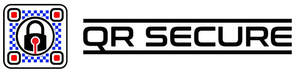
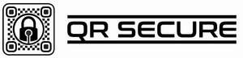

Trade Mark Journal No.2025/028 11 July 2025
UK00004206396 20 May 2025 (7,9,25,35,40,42,45)
Mark 1

Mark 2
Mark 3

- Class 7
- Laser engraving machines; Portable laser engraving machines; Etching machines; Engraving machines.
- Class 9
- Safety, security, protection and signalling devices; Laser printers; Laser installations, other than for medical use; Laser equipment for non-medical purposes; Lasers for industrial use; Lasers not for medical use; Lasers for non-medical purposes; Labels with machine-readable codes; Optical code readers; Radio-frequency identification (RFID) tags; Labels with integrated RFID chips; Radio-frequency identification (RFID) readers; Software; Operating software; Application software; Enterprise software; Workflow software; Business software; Software applications; E-commerce software; Business technology software; Downloadable software; Downloadable software applications; Downloadable application software; Software drivers; Computer software applications, downloadable; Downloadable computer software applications; Downloadable computer utility software; Computer application software; Computer software for use as an application programming interface (API); QR code labels; Web application and server software; Security token hardware for user authentication; GPS software; Web application software; Customer relation management [CRM] software; Mobile apps; Enterprise application software [EAS]; Data and file management and database software; Downloadable computer software applications for minting non-fungible tokens [NFTs]; Computer software for application and database integration; Application software for mobile devices; Optical Mark Recognition [OMR] software.
- Class 25
- Clothing; Head wear; Work clothes; Work shoes.
- Class 35
- Online retail store services in relation to the sale of QR code tokens; Online retail store services in relation to the sale of vehicle decals and security cover plates; Online retail store services in relation to the sale of merchandised keyrings, USB sticks, coasters, clocks, mugs; The bringing together, for the benefit of others, of a variety of business services, enabling consumers to conveniently compare and purchase those services via a website; Provision of online marketplaces for buyers and sellers of goods and services which are authenticated by non-fungible tokens; Provision of an online marketplace for buyers and sellers of goods and services; Merchandising; Product merchandising; Online retail store services relating to clothing.
- Class 40
- Laser engraving of QR codes onto tools; Laser engraving of QR codes onto vehicles and vehicle glass; Laser engraving of QR codes onto mobile devices, laptops, tablets, and other personal devices; Laser engraving of QR codes onto bicycles; Laser engraving of QR codes onto farming equipment and machinery; Laser engraving of QR codes onto audio-visual equipment; Laser engraving of QR codes onto construction and maintenance equipment; Laser engraving of QR codes onto vehicle maintenance, servicing and diagnostic tools; Laser engraving of QR codes for the purpose of traceability, proof of ownership, and theft deterrent; Laser engraving; Laser scribing; Scribing (Laser -); Treatment of materials by laser beam; Laser scribing services; Rental of laser engraving machines; Etching; Etching of glass; Glass etching; Engraving; Vinyl wrapping of vehicles.
- Class 42
- Software development; Development of software; Computer software development; Development of computer software; Installation of software; Software installation; Software engineering; Design and development of computer hardware and software; Design of software; Software design; Development of driver software; Technical services for the downloading of software; Development of computer database software; Computer software consultancy; Computer software integration; Rental of software; Software as a service; Development of computer software application solutions; Computer software design services; Design and development of computer database software; Development and maintenance of computer software; Software engineering services; Development and maintenance of computer database software; Installation of database software; Design and development of computer software; Computer software design and development.
- Class 45
- Laser engraving of QR codes onto tools, vehicles, bicycles, mobile and personal computing devices, machinery, and equipment, for the purpose of traceability, proof of ownership, and theft deterrent; Security monitoring services; Security marking of goods; Software licensing; Licensing of software; Computer software licensing; Licensing of computer software; Licensing of technology; Licensing of computer programs; Licensing of databases.
QR SECURE LTD